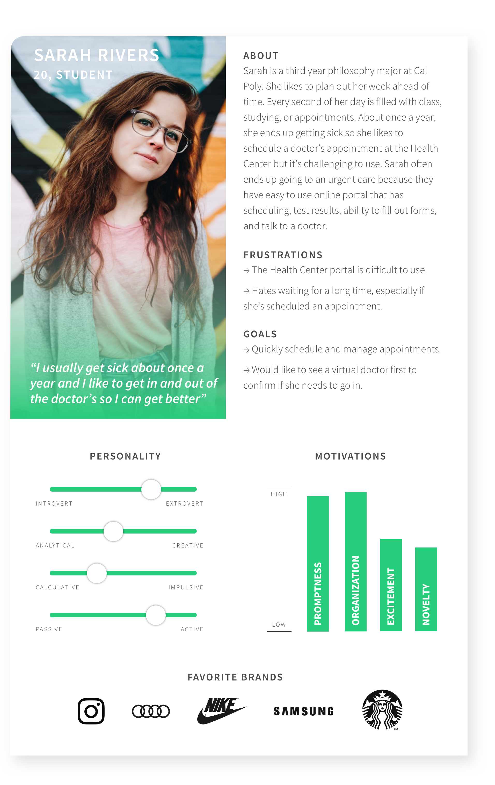
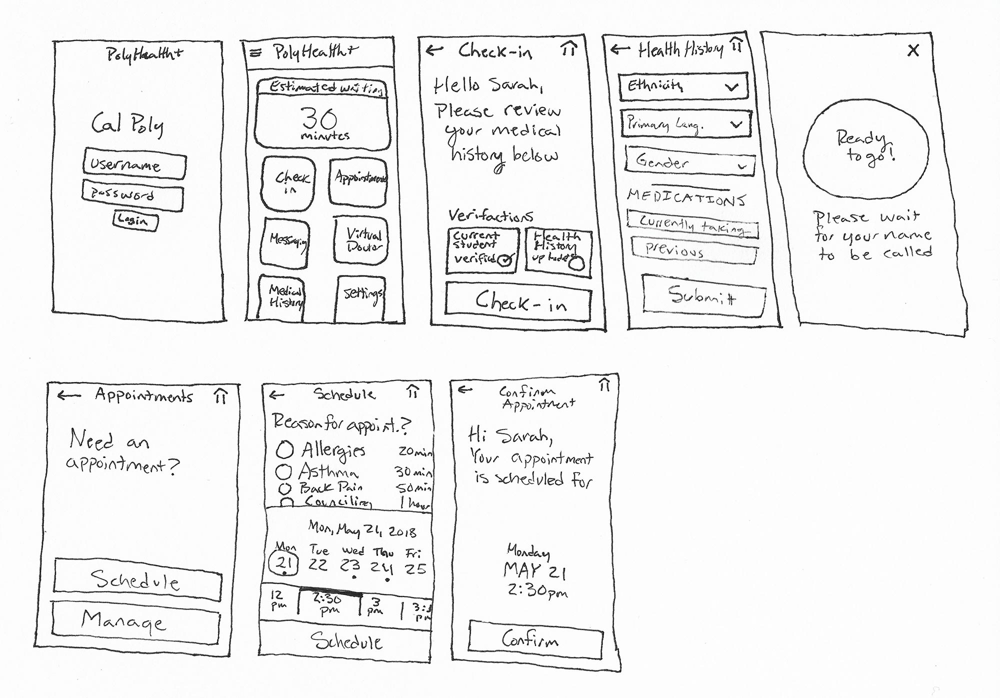

Process
Hypothesis
We believe that by designing a new app for Campus Health & Wellbeing that allows Cal Poly students to easily schedule and manage appointments, seamlessly check in, complete forms, and quickly communicate with the healthcare providers, we can create a smooth user experience for students who visit the health center. We will know this to be true when we see the student feedback to be rated above average. The main goal of the app is to reduce time spent using the system and ease of use.
Competitive Analysis
Based on the competitive analysis, the direct competition to Campus Health & Wellbeing would be French Hospital owned by Dignity Health. They have a variety of apps that have a majority of the features we're looking to implement but all features are spread around multiple apps that can make it confusing to users.
We also looked into Urgent Cares in San Luis Obispo because that's where students would most likely go to if not at Cal Poly. Most of their websites were outdated and didn't seem to feature any digital capabilities. A few did have patient portals that gave access to test results, making appointments and payments, and patient-doctor communication.
Stanford Health Care MyHealth is considered indirect competition but it is a great model to look at considering it's for university health centers and it has all of the features we're looking to actualize.
In an unrelated field to healthcare, Squire allows users the ability to find and schedule appointments with barbers. The app adds an interesting aspect that allows customers to pick different services with an allotted amount of time. Squire also features, appointment reminders, customers to send photos, and customer profiles.

User Findings
We interviewed 6 different individuals that had used the Health & Wellbeing Center multiple times throughout their time at Cal Poly.
- Only go to the Health Center if they have to
- Preferred because it’s ‘free’
- Use apps to schedule other services
- Hate long wait times
- Want more information about appointment availability
- Would like text reminders
- Think an app would make the Health Center appear more high-tech
“My local doctor uses an app by the Palo Alto Medical Foundation which let’s me send a message to a doctor about a problem/symptoms and they often respond promptly and with helpful advice. It doesn’t always save me a trip to their office but it is a nice feature”
“I don’t like to call into anywhere for an appointment in general because it can be time consuming. But I almost always call before going to the Health Center to see if I can avoid busy periods”
“The Health Center just feels like an outdated facility. If it had a modern app, I think others would feel more confident and comfortable going there because it would suggest that the center is up-to-date with technology”
“I’ve been to the Health Center about 2 times during each of my 5 years at Cal Poly. Out of all those times, never was I able to get an online appointment during the date that worked for me because a doctor was unavailable. I don’t know if it’s because I’m using the portal wrong, but it’s super frustrating”
“I don’t go to the Health Center unless I absolutely have to. It would be interesting if I could use a virtual doctor because then I could talk with a doctor before I’m dying and possibly get diagnosed before it gets horrible”
“I’m constantly on the go so when I get sick I just want to schedule an appointment then show up without having to wait forever”
←
→
Persona
We created a persona based on the themes uncovered during our interviews. The typical individual we interviewed didn't regulary visit the Health Center but when they needed to, it was critical that they could easily schedule an appointment since they're busy.

Scenario
Sarah Rivers is a third year philosophy major at Cal Poly. She is very organized and likes to plan out her week ahead of time in her planner. Every second of her day is filled with class, studying, or appointments. Sarah has been having a very busy winter quarter. Aside from being enrolled in 16 units, she is once again working part-time as an administrative assistant for the philosophy department, where she is often in contact with multiple students. Her high stress makes her an easy target for this years flu season, and she soon finds herself experiencing a fever and cough that just won’t go away.
Sarah is not a fan of the Health Center on campus: she has had trouble scheduling an appointment, knows first-hand how long a wait for a walk-in can be, and feels the facility is outdated. But her symptoms have worsened, and since she realizes her tution won’t cover a visit to the local hospital, she decides a visit to the Health Center is necessary.
Sarah learns that the Health & Wellbeing Center has just created a new app that allows for easy scheduling. She is skeptical but she downloads the app and easily logs in using his regular Cal Poly portal information. She’s able to find the appointment scheduling page then selects a date and time that works for her. Sarah arrives at the Health Center and learns she can now directly check-in through the app and complete any required forms. She’s able to get in and out of the Health Center within 30 minutes because of the app which would have typically taken her 2-3 hours otherwise.
Feature Prioritization
After learning the major goals and frusterations our users, we decided to prioritize the features for the minium viable product based on our users.
User Flow
Based on our feature prioritization, we create a user flow for the minimum viable products for the new PolyHealth+ app.
Sketches
